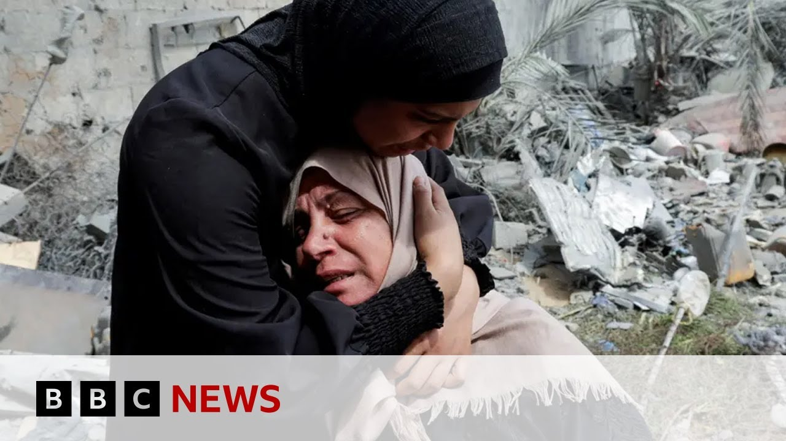

来B站一起耍【Global每日英语简报】
【哈马斯称停火谈判“毫无意义”，以色列计划占领整个加沙 | BBC新闻】
Summary: A senior Hamas official told the BBC that negotiations with Israel are pointless as Israel expands its offensive in Gaza, raising concerns from the EU and UN. Meanwhile, hostage families and polls in Israel show mixed reactions to the military escalation.
摘要： 哈马斯高级官员向BBC表示，与以色列的谈判毫无意义，同时以色列扩大对加沙的攻势，引发欧盟和联合国的担忧。与此同时，以色列人质家属和民意调查显示对军事升级反应不一。

⏱️ Estimated Reading Time: 5 min
Where in the last hour a senior Hamas official has told the BBC that any negotiations or engagement with Israel are pointless.
就在过去一小时，哈马斯一名高级官员告诉BBC，与以色列的任何谈判或接触都毫无意义。
While the current blocking of aid into Gaza continues, it comes after Israel's security cabinet approved a plan to greatly expand the offensive against Hamas in Gaza with tens of thousands of recruits being called up.
尽管目前对加沙的援助封锁仍在继续，此前以色列安全内阁批准了一项计划，大幅扩大对加沙哈马斯的攻势，并征召数万名新兵。
The EU says it fears the plans could lead to more casualties and suffering and the United Nations Secretary has also expressed his concern.
欧盟表示担心该计划可能导致更多伤亡和苦难，联合国秘书长也表达了关切。
Let's speak to our Middle East correspondent, Yoland Nell, who's in Jerusalem.
让我们连线在耶路撒冷的BBC中东记者约兰德·内尔。
Uh, tell us why do we think the Israeli government is doing this now?
请告诉我们，为什么我们认为以色列政府现在采取这一行动？
Well, really, this is quite an extraordinary escalation that the Israeli government um has announced.
事实上，这是以色列政府宣布的一次相当不寻常的升级。
Um, it said for the first time really uh that it could well stay um in all of Gaza, in effect occupying it.
这是以色列首次明确表示可能长期留在整个加沙，实际上就是占领。
Uh, but that is the current strategy.
这就是当前的战略。
What it's trying to do at the moment is to um put pressure on Hamas, really to to destroy it and to try to bring back by force the remaining hostages that it's holding.
目前以色列试图向哈马斯施压，目的是摧毁它，并试图通过武力夺回被扣押的剩余人质。
Uh it's thought that up to 24 could still be alive and held in the Gaza Strip.
据信仍有最多24名人质可能活着并被关押在加沙地带。
Now, you know, at the same time, we do have President Trump who is due to visit this region just next week to meet Arab Gulf countries.
与此同时，特朗普总统将于下周访问该地区并与阿拉伯海湾国家会晤。
So we've had um you know some pointing out that um Israel's plan comes at this moment where we've had on the one hand this real collapse in um recent ceasefire efforts and then a possible window of opportunity uh with President Trump coming to the region.
因此有人指出，以色列选择此时公布计划，一方面是近期停火努力彻底失败，另一方面是特朗普总统访问该地区可能带来机会窗口。
Um and so that's why Israel seems to have made this plan and laid out right now.
这就是以色列似乎现在制定并公布该计划的原因。
It will take some time to implement to call up all of those reser to get them into place.
征召所有预备役人员并部署到位需要一些时间。
Um, and there is, you know, of course, the suggestion that's coming particularly from the US and from Israeli voices, too, uh, that this could be a moment for some new sort of innovation.
当然，特别是来自美国和以色列内部的声音认为，这可能是某种新创新的时机。
But then we've got from this senior Hamas official, you know, a reminder that we're at the moment more than two months into a situation where all aid has been blocked going into Gaza by Israel.
但这位哈马斯高级官员提醒我们，以色列对加沙的全面援助封锁已持续两个多月。
We've got these warnings coming out um on a daily basis of how the humanitarian situation in Gaza is deteriorating.
我们每天都收到关于加沙人道主义局势恶化的警告。
Warnings too um that starvation as a method of warfare is a you know in itself a war crime and uh you know that Hamas really trying to put its own pressure here to get some action on aid being allowed back into Gaza.
还有警告指出，将饥饿作为战争手段本身就是战争罪，而哈马斯正试图施加压力，要求允许援助重返加沙。
Do you get a sense of how widely supported this is by people in Israel for the country to expand its military operation in Gaza?
你认为以色列民众对扩大加沙军事行动的支持度如何？
I mean we have seen some really sort of notable comments um in the past day since this plan was really outlined um with the hostage families forum the main support group um for those supporting the hostages basically saying that the government has chosen you know acquiring territories over the hostages and they have sought to have a meeting with the Israeli military chief of staff to ask how he is expecting to try to protect the lives of their loved ones during this intensification of the operation expected um to to gather pace after President Trump's visit if things uh go as expected.
过去一天我们看到一些引人注目的评论，人质家属论坛——支持人质的主要团体——基本表示政府选择了占领领土而非营救人质，他们要求与以色列军方参谋长会面，询问在特朗普总统访问后行动预计加速的情况下，如何保护他们亲人的生命。
We've also got, you know, opinion polls in Israel that suggest that a majority of the population is interested in a deal that would bring back those remaining hostages if even if um that means ending the war in Gaza.
以色列的民意调查还显示，多数民众支持通过协议带回剩余人质，即使这意味着结束加沙战争。